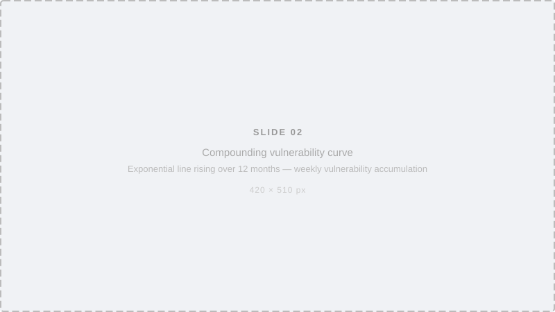
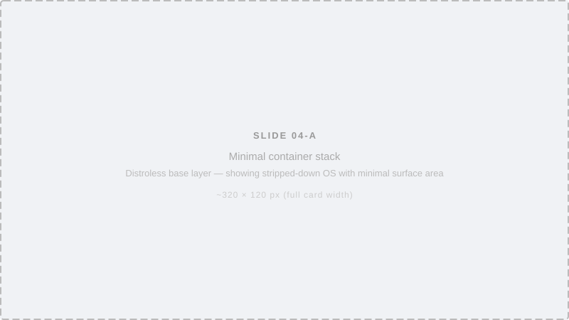
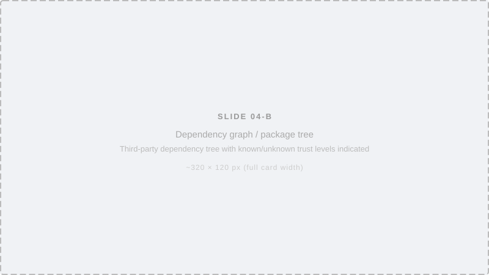
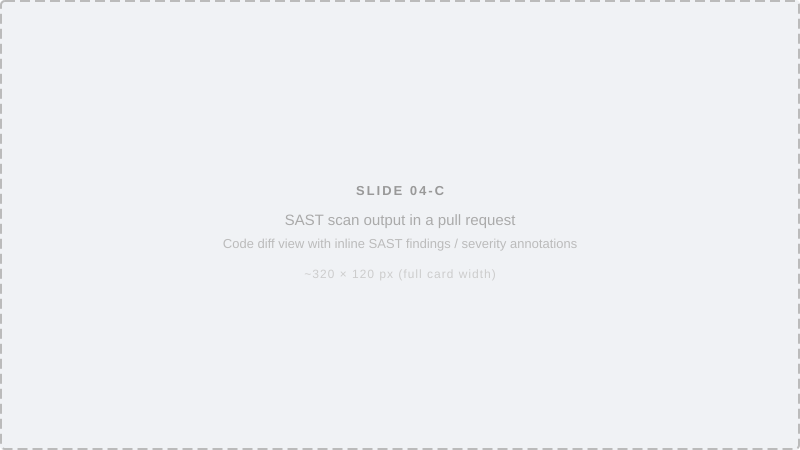
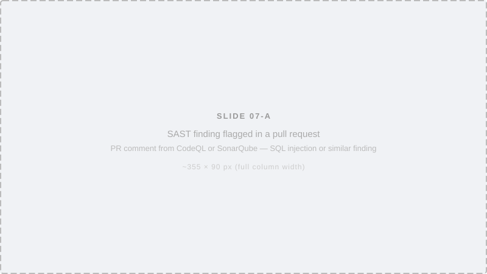
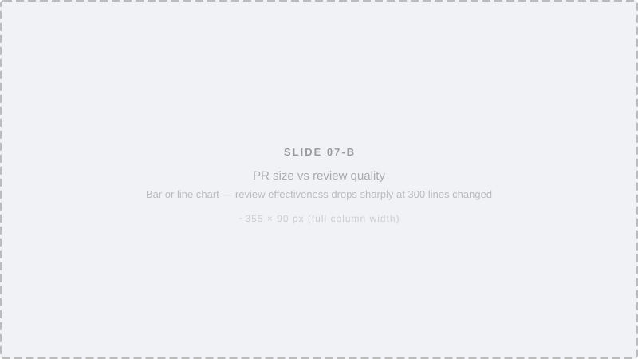
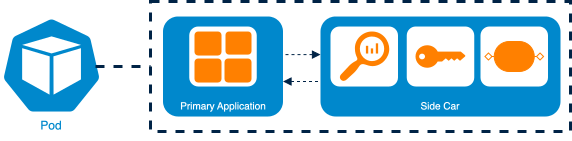
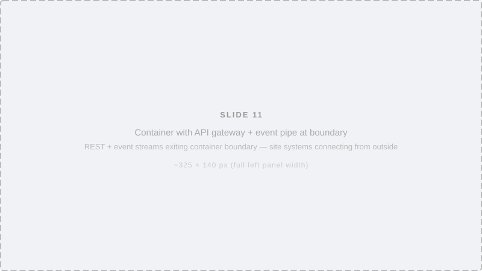

A strategy for continuous security, compliant delivery,
and replacing the fork model across the BEUMER product suite.
Known vulnerabilities in a system left unpatched for one year. Each one a potential vector into the next.
Failing to patch does not hold the line. It compounds. The longer the delay, the less the gap looks like a missed update and the more it looks like an open door.

When every customer runs their own modified version, patching requires a code merge — not a deployment. Expensive, slow, and easy to defer indefinitely.
Every security update requires reconciling customer-specific changes with the trunk. For complex sites with years of accumulated modifications, this runs to thousands of hours.
Expensive enough to defer once, the merge stops happening. The site runs on an increasingly exposed version of software we no longer control or have visibility into.
From 2027 we are legally accountable for the security posture of software five years post-delivery. The fork model makes that compliance structurally impossible.
A small vulnerability in application code can open a path to a severe OS exploit. No layer can be treated as lower priority.
The base image everything runs on. Minimise installed tooling, use distroless builds, rebuild weekly. Scan continuously with Twistlock or Wiz.

Third-party packages we rely on but did not write. Trusted mirrors, dependency locks, Dependabot for automated update PRs, Blackduck for scanning.

The code our developers write daily. SAST with CodeQL or SonarQube. Small pull requests. Strong review culture. The OWASP Top 10 lives here.

Minimize. Build separately.
Deploy regularly. Scan continuously.
Strip images to bare essentials — no package manager, no shell, no SSH. Providers like Chainguard deliver pre-hardened minimal images that eliminate whole classes of exploit.
Build toolchain stays in the build container. Only the compiled artefact moves to the runtime image. Build tools never ship to production.
Images rebuilt from a fresh patched base every week, regardless of feature changes. Base image age is a tracked fitness metric — slippage is visible immediately.
Twistlock or Wiz scans images in active environments. Alerts when a running image exceeds an acceptable vulnerability threshold or image age.
Code we rely on but did not write. Supply chain attacks across NPM, PyPI, NuGet and Maven are now a daily event.
Only verified packages enter the build. Official packages from known vendors are trusted by default. Unknown or hobbyist packages are blocked at the pipeline boundary.
Exact versions locked at build time. If v1.2.3 shipped last week, v1.2.3 ships this week. No sliding version windows where anything in v1.x is acceptable.
Automated pull requests for dependency updates. Pipeline tests must pass before merging. Reliable updates without manual tracking or crisis-mode upgrades.
Software composition analysis flags known vulnerabilities in the dependency tree on every pipeline run — not as a periodic audit.
The layer no scanner fully understands and no base image update can fix. It requires skill.
CodeQL and SonarQube analyse code before it merges to main. They flag dangerous patterns, highlight where best practices are missed, and create a documented record. Catch the repeatable mistakes reliably and at low cost.

Review effectiveness degrades sharply above 300 changed lines. Above 1,000 lines a review is a formality. Keeping pull requests small is not a process preference. It is a security control.

Neither works alone. Strong SAST with weak review ships logic flaws. Strong review without SAST misses systematic pattern-based vulnerabilities. Together they form a proportionate defence.
The pipeline secures what we build. The integration model determines whether we can deliver it weekly to every customer — without forking, without merging, without stalling.
Reach for them in order. Build the next only when the previous proves insufficient.
A secondary container alongside ours. Handles log routing, auth tokens, secrets, metrics — without touching the main container. The trunk stays on the weekly cadence.
Configuration, not code. Sites fill in values; they do not modify behaviour.
RESTful and event-driven interfaces at the software boundary. Sites build integrations on their side. Strong versioning ensures our weekly updates never break their code.
Their code stays theirs. Ours stays ours.
Our domain logic exposed as a library inside their container. Sites take ownership of Layers 1 and 2. Not built until the need is proven by real customers.
Use with reluctance. Shifts operational responsibility to the customer.
A secondary container in the same Kubernetes pod. It intercepts, enriches and forwards data — logs, metrics, auth tokens — without the main container knowing or caring what happens downstream.
Customisation lives in the sidecar. The main codebase stays on the trunk and on the weekly cadence.
It is critical and non-negotiable that the sidecar is the customisation path. Not a fork, not a patch to the main container, not a workaround through internal functions.

Sites connect their own systems to ours at the boundary. Their code stays theirs. Our container stays unmodified.

Lightweight gateway exposing the OpenAPI spec. Rate limiting, versioning and routing enforced at the boundary before any request reaches our software.
AsyncAPI spec as the development contract. Reactive integrations for high-traffic scenarios where polling over HTTP is not appropriate.
OAuth2 token generation and validation across both REST and event interfaces. One consistent authorisation model for the entire ecosystem.
Site domain admins issue OAuth2 clients and manage API surface access without calling us. Strong versioning on our side means our weekly updates never break their integrations.
We start with two customers — the easiest we can find, and the most difficult. The easiest validates the pipeline end to end in a real environment. The most difficult tells us where the model breaks.
But the selection is not purely technical. We are choosing people. At each site we need a counterpart who starts sceptical. A reluctant operator who becomes a success story carries more weight than any proof of concept.
The first milestone is sidecar-only. No API, no SDK. We follow the friction. Technical friction means we build. Organisational friction means we teach. Their feedback shapes what gets built next. They are participants, not recipients.
Validates the pipeline and sidecar model end to end. Proves the weekly delivery cadence works in a real environment.
Finds where the model breaks. Identifies what we genuinely need to build next. Prevents over-engineering.
Repeat. Build only what is proven necessary. Follow the path of most resistance, not the path of most features.
Not staffed from a resource pool. Chosen because they are curious, technically sharp, and trusted by their peers. Being selected should feel like an opportunity.
Both teams practice first on Beumer's physical demo setup. Mistakes on the demo rig cost nothing. The same mistakes at a customer site cost credibility.
Owns the integration surface. Defines what configuration a site actually needs, how thin the interface can stay while still being useful, and where the container boundary sits in practice rather than on a whiteboard.
Owns the delivery machinery. Builds the weekly cadence, wires the three scanning layers together, and proves a fresh patched container can ship on schedule without human intervention.
As the model proves itself, new teams form around proven needs. An API team when required. A platform team when scale demands it. Nobody starts cold.
Neither role becomes less technical. Both become differently technical. Expertise migrates — it does not disappear.
These are the standard skills of modern software delivery. The demo rig is where both roles extend into production safely for the first time.
A flat purchase price made sense when software was delivered once. It does not make sense when we are delivering a fresh, patched container every week.
Deliver a binary. Hand off responsibility. Security becomes the customer's problem after handover. Patch when asked, if at all.
Customers buy a continuously maintained, secure, supported system. Every week brings a new base image, updated dependency locks, and a full pipeline security pass. Some weeks that includes new features. Every week it includes a current security posture.
We are no longer handing off a binary and stepping back. Incidents, patches and critical CVEs are our problem to resolve on the weekly cadence — not theirs to absorb and manage alone.
Measured continuously, not audited annually. A shared language across developer and architect teams.
These are not vanity metrics. A rising base image age is the same signal as an unpatched system — just caught earlier. When teams share these numbers they share ownership of the architecture.
The EU Cyber Resilience Act makes manufacturers legally accountable for the security posture of their software after it leaves their hands. For the first time.
Manufacturers must notify authorities of severe incidents and actively exploited vulnerabilities. We must know what is running at every customer site and what its security posture is.
Any new software sold must ship with an active cybersecurity strategy covering five years post-acquisition. Not a compliance checkbox. A structural change to the support relationship.
Under the fork model, a customer who forked three years ago and never merged an update is running software we have no visibility into. From 2027 the question of who is responsible becomes a legal one.
That is the only model that gives us a defensible answer when a regulator or a customer asks: what is the current security posture of your software — and how do you know?